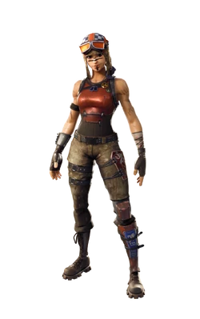

Website Summary
What content will the site contain?
This ariticle will feature short histories and images of different Fortnite skins, along with their unique styles and themes.
Where will you get all of the content for your site (ie. images & text)?
The content and imformation will come straight from the Fortnite wikipedia
Why should users care about the focus of the site?
Skins are a huge part of Fortnite’s identity, and fans often want quick info on their favorites. This site makes that easy.
Why should a site be built for this?
This site shows a simple and easy to read place to explore skins without distractions.
What would you like users to do at your site?
Users should browse, discover something new about skins, and enjoy their designs.
What is the goal of the site?
The goal is to give Fortnite players a quick way to learn some of the game’s most iconic skins.
Renegade Raider
The Renegade Raider skin in Fortnite debuted in Chapter 1, Season 1, as part of the game's early battle pass offerings. It was part of the "Shop" section and was available exclusively for players who reached Level 20 in the battle pass, making it one of the first rare skins. Over time, Renegade Raider became highly sought after due to its scarcity, as it was never re-released in the Item Shop after its original run. The skin's rugged, tactical look, featuring a helmet and goggles, made it stand out as a symbol of early Fortnite nostalgia. Today, it’s regarded as one of the most iconic skins, representing the game's beginnings and the rare, exclusive content of its first seasons.